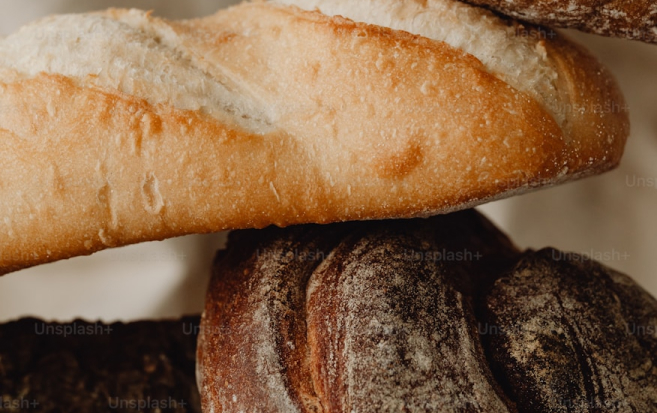
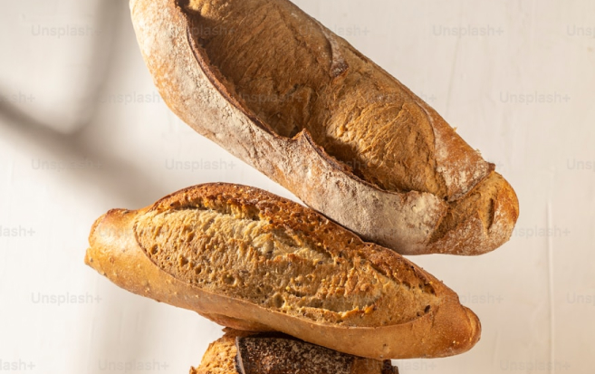
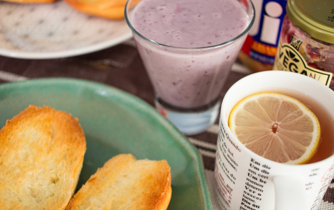
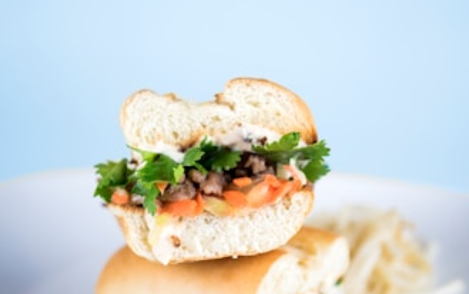
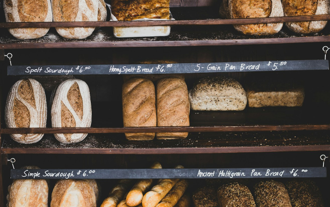

사업분야
spc산립의 사업분야를 소개합니다.

01
종합식품사업
spc산립은 최고의 품질과 고객중심, 창의적 도전으로 지속성장 가능한 경쟁력을 갖춘 글로벌 종합식품회사로 도약하고 있습니다. 샤니, 밀다원, 에그팜 등을 기반으로 제빵사업 역량을 고도화 하고,그릭슈바인(육가공,hmr),프레쉬푸드팩토리(신선편의식품)등 식품 사업을 신성장동력으로 육성하고 있습니다.
02
점포사업
떡 프랜차이즈 브랜드 '빚은' 우동브랜드 '하이면',창고형 베이커리 '베이커리 팩토리'등에서 최근 변화하는 라이프스타일&소비 트렌드를 반영한 파인 캐주얼 스내킹 스토어'시티델리'와 LA에서온 오리지널 에그샌드위치 '에그슬럿'까지 점포사업을 확대하고 있습니다.


03
컨센션사업
2019년 가평휴게소 사업을 수주하면서 본격 컨세션 사업을 운영하고 있습니다. 휴게소 방문 고객들의 편안하고 즐거운 여행길을 제공하고자 SPC그룹 브랜드 배스킨라빈스,던컨도저츠, 빚은을 비롯해 카카오프렌즈, 북촌손만두 등 다양한 매장영역을 넓혀가고 있습니다.

04
서비스사업
SPC GFS는 식품유통 전문회사로 지역 원료 소싱에서 시작해 식자재 유통, 프랜차이즈 가맹점 거래및 컨세션 사업에 이르는 Farm to Table을 실천하고 있습니다.

05
수출사업
높은품질, 안전 기준을 통해 엄경한 품질 관리를 기반으로 SPC삼립은 여러 제품을 해외로 수출합니다. 대표적으로 빵, 약과, 빚은 떡, 하이면 누들 등을 수출중이며, 미국,유럽, 중화권, 동남아 등 다양한 나라의 입맛을 사로잡고 있습니다.